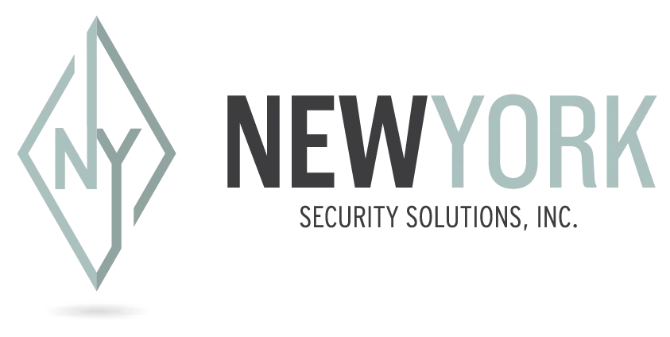

New York Security Solutions x Rev.io
A buyer-facing readout for modernizing the quote-to-cash and service operating layer behind NYSS’s cloud-based physical security, access control, video surveillance, and multi-site customer work.
A full-service security integrator built around cloud-based physical security for modern, multi-site organizations.
What they deliver
NYSS designs, installs, migrates, and supports access control, surveillance, cloud-based security, asset-management, and wireless-networking solutions.
Who they serve
The website positions NYSS for office buildings, retail locations, healthcare facilities, school campuses, commercial real estate, education, healthcare, and retail.
Why it matters to Rev.io
Their value is not one-time hardware alone. It is planning, deployment, project execution, support, and long-term customer relationship management across physical sites.
Source basis: NYSS public website. The shared Notion page was not publicly accessible during build, so meeting-specific discovery details should be validated before external delivery.
Cloud security growth creates more recurring customer touchpoints — and more pressure on the systems behind the work.
Security work is becoming lifecycle work
Cloud platforms, access permissions, footage retention, system updates, user changes, and remote administration create ongoing operational demands after installation.
Multi-site customers expect one view
NYSS’s website emphasizes centralized dashboards and scalable management across locations. Internal quoting, billing, service, and reporting need the same consistency.
Migrations need disciplined execution
NYSS positions phased migrations as a way to minimize disruption. Rev.io should mirror that discipline with project, inventory, ticketing, invoicing, and customer communication workflows.
The operational risk to test: whether the back office can keep pace with project-heavy, service-heavy, recurring security work.
Project-to-service handoff
Installation and migration work needs clean conversion into ongoing support, recurring billing, asset history, and customer visibility without duplicate entry.
Multi-location complexity
Customers with many sites need accurate location hierarchies, device and access records, service history, and reporting by property, campus, or business unit.
Recurring revenue discipline
Cloud-based platforms create recurring subscriptions, support plans, monitoring, warranty, and service agreements that need clean billing rules and renewal visibility.
Inventory and vendor coordination
Security projects involve cameras, readers, controllers, networking gear, licenses, vendors, and phased deployment schedules — all places where disconnected systems leak margin.
The business case is cleaner quote-to-cash, better project control, and less manual work supporting recurring security customers.
Reduce revenue leakage
Centralized products, agreements, renewals, and location-specific billing can reduce missed recurring charges, support entitlements, and project closeout gaps.
Improve project margin control
Better tracking of equipment, labor, purchasing, receiving, and change orders helps protect margin on security installations and migrations.
Create customer-ready visibility
Cleaner service history, account structure, site data, and invoice detail make it easier to support commercial real estate, education, healthcare, and retail buyers.
Scale without extra admin
As NYSS adds sites, customers, and cloud security subscriptions, Rev.io should help operations scale through repeatable workflows instead of spreadsheet glue.
Directional assumptions only. Exact ROI should be firmed up with NYSS’s customer count, site count, monthly invoice volume, service-ticket volume, project volume, current tool costs, and renewal process.
Rev.io should prove it can support security integration workflows, not just generic PSA activity.
Core workflows to validate
- Project setup, phases, milestones, and closeout billing
- Recurring cloud/security agreements and renewals
- Site/location hierarchy and asset history
- Ticketing, dispatch, mobile technician workflows
- Purchasing, receiving, inventory, and serialized equipment tracking
Systems to map
- Current CRM and quoting process
- Accounting / general ledger
- Vendor and distributor workflows
- Cloud security platform licensing
- Customer communication and reporting tools
Security-specific proof points
- Access control and video security service plans
- Multi-site customer reporting
- Migration project templates
- Change order and equipment replacement handling
- Renewal and warranty tracking
Open questions
Confirm the current PSA/accounting stack, monthly invoice count, active service agreement count, average project volume, number of field users, and top pain points from the discovery call.
Demo emphasis
Show the full path from quote to project to ticket to recurring invoice, using a multi-site commercial security customer as the scenario.
Turn the next Rev.io conversation into a workflow proof, not a generic platform tour.
1. Confirm discovery facts
Validate NYSS’s current systems, primary operational bottlenecks, customer/site volume, and the decision timeline.
2. Build a security-integrator demo path
Use a realistic multi-site security customer: quote, order, project, inventory, installation, service ticket, recurring agreement, and invoice.
3. Quantify the ROI
Collect monthly billing/reporting hours, tool costs, project leakage examples, and renewal miss risk to turn assumptions into a firm business case.
4. Align implementation plan
Map the phased migration approach, data inputs, user groups, integrations, billing templates, project templates, and success criteria.
Recommended next step: confirm the meeting notes, then run a tailored Rev.io PSA + billing demo around NYSS’s security integration lifecycle.